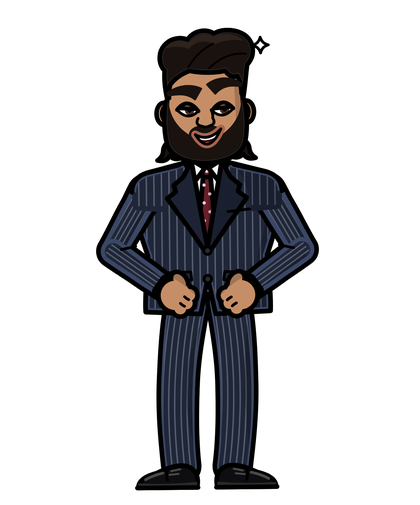

«Si tú no decides dónde va la cámara, la IA decide por ti. Y casi siempre elige lo más aburrido.»
Los planos: qué tan cerca
Un plano es qué tanto se ve de la escena. Cada uno cuenta algo distinto. Entre paréntesis va el nombre en inglés, porque muchas herramientas entienden mejor ese término:
Un truco de director: abre con un plano general para ubicar y después acércate. Y cuando quieras que algo se sienta importante, ve al detalle.
Los movimientos de cámara
Estos cinco movimientos cubren casi todo lo que vas a necesitar. Aprende la diferencia y úsalos con intención:
- Paneo (pan): la cámara se queda en su sitio y gira de lado a lado, como cuando volteas la cabeza. Sirve para mostrar un lugar o seguir a alguien que pasa.
- Dolly (dolly in / dolly out): la cámara entera avanza o retrocede. El fondo se mueve distinto que la persona y eso da profundidad. Acercarse así crea intimidad o tensión.
- Zoom: la cámara no se mueve; solo el lente agranda la imagen. Se ve más plano que el dolly. Un zoom rápido (crash zoom) sirve para sorprender.
- Órbita (orbit): la cámara da la vuelta alrededor de la persona o del producto. Ideal para presentar algo con orgullo.
- Seguimiento (tracking): la cámara va al lado, delante o detrás de alguien que camina. Te mete en su recorrido.
La confusión más común es dolly contra zoom. Recuérdalo así: en el dolly camina la cámara; en el zoom solo cambia el lente.
Los ángulos: desde dónde miras
La altura de la cámara cambia cómo se siente el personaje:
- A la altura de los ojos (eye level): neutral, cercano, como una conversación.
- Contrapicado (low angle): desde abajo. La persona se ve grande y con poder.
- Picado (high angle): desde arriba. La persona se ve pequeña o vulnerable.
- Cenital (overhead): justo desde arriba, mirando hacia abajo. Perfecto para comida y productos sobre una mesa.
- Ángulo holandés (dutch angle): la cámara inclinada. Da sensación de que algo anda mal. Úsalo poco.
Los lentes en palabras simples
El lente se mide en milímetros (mm). No necesitas saber de física, solo esto: número bajo, se ve más espacio; número alto, se ve más cerca y el fondo se aplasta.
Se ve mucho espacio. Bueno para lugares y acción. Si la cámara está muy cerca de una cara, la deforma.
Se parece a lo que ve el ojo. El punto de partida más seguro para personas.
Y el teleobjetivo, de 75 mm en adelante, te acerca desde lejos: el fondo se ve más cerca y se desenfoca. Es el de los retratos y los primeros planos que se ven caros. Si quieres el fondo borroso, dilo: «fondo desenfocado» (shallow depth of field).
Cómo escribir el movimiento
Cuando la cámara se describe solo con texto, cada generación la interpreta un poco distinto. Para que obedezca, sé concreto: un solo movimiento, su velocidad, cómo empieza el encuadre y cómo termina.
Cámara dinámica moviéndose alrededor de la panadera, con zoom y movimiento.
Empieza en plano medio de la panadera sacando el pan del horno. La cámara se acerca despacio, a velocidad constante, hasta un primer plano de sus manos y el pan. El horizonte se mantiene derecho.
Muchas herramientas entienden mejor los términos de cámara en inglés. Esta plantilla combina las dos cosas: la escena en tu idioma y la cámara en inglés.
Camera: starts on a ________ shot, slow ________ (dolly in / dolly out / pan left / orbit / tracking), constant speed, ends on a ________ shot. Level horizon, no other camera movement.
Presets de cámara y efectos virales
Un preset es un movimiento ya armado que eliges con un clic en vez de describirlo. Como el texto varía en cada intento, el preset suele ser más confiable. Si tu herramienta los tiene, úsalos para los movimientos difíciles.
- En Higgsfield: Cinema Studio trae movimientos de cámara listos para elegir, además de género, luz y lente. Un consejo de su propia guía: deja fijos el género, la luz y el lente, y cambia solo el movimiento mientras pruebas.
- Efectos virales: son plantillas que convierten una sola foto en un clip con efecto, sin escribir prompt. Funcionan bien como gancho. Pruébalos en baja resolución antes de hacerlos en calidad alta.
- En Kling, Veo o Seedance: el movimiento se escribe en el prompt con las palabras de esta escena. Si la herramienta tiene un control de cámara aparte, suele ser más confiable que el texto.

«Un efecto llamativo atrapa la mirada. Pero lo que hace que se queden es que la historia tenga sentido.»
Un plano, dos cámaras
Toma la escena que dirigiste en la Escena 2. Genérala dos veces cambiando solo la cámara: una con dolly hacia adelante y otra con órbita. Todo lo demás, igual. Compara cuál cuenta mejor lo que quieres y guárdala: va a ser uno de los clips de tu primer Reel en la Escena 4.
Antes de darle «generar»
- ¿Dijiste qué plano es: general, medio, primer plano o detalle?
- ¿Hay un solo movimiento de cámara, con su velocidad?
- ¿Dijiste cómo empieza y cómo termina el encuadre?
- ¿El ángulo cuenta lo que quieres: poder, cercanía, vulnerabilidad?
- ¿Revisaste si tu herramienta tiene un preset para ese movimiento?